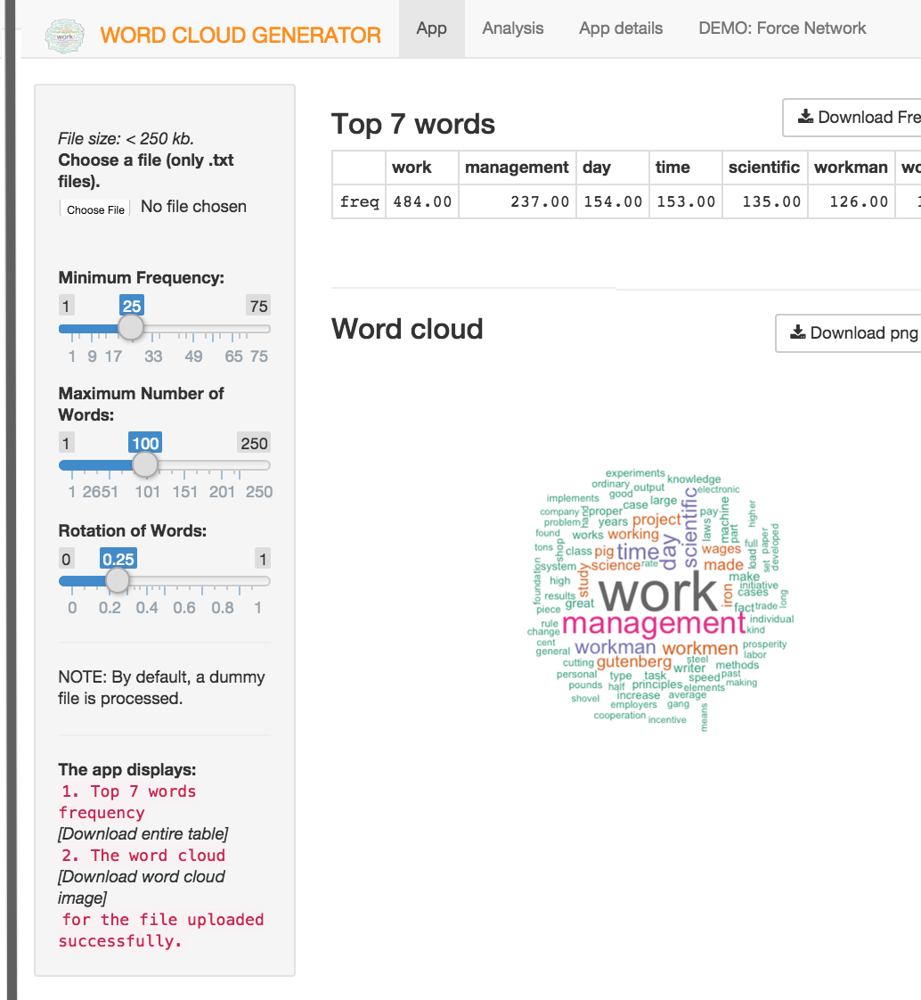

A Word Cloud Generator App
Problem statement: Given any book, article, program, news, journal, white-paper, etc. user wants to visualise the high frequency words in a most effective way.
With a word cloud generator the high frequency words of any given text file are identified, highlighted and visually represented.
The key idea is to quickly build and download word cloud for any file you are interested in.
Very simple to use. You upload a file and tweak the settings; the app generates a downloadable word-cloud and frequency-table. Also, enables analyis of the 7 top frequencies, if interested.
